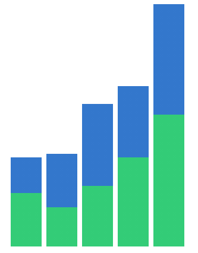
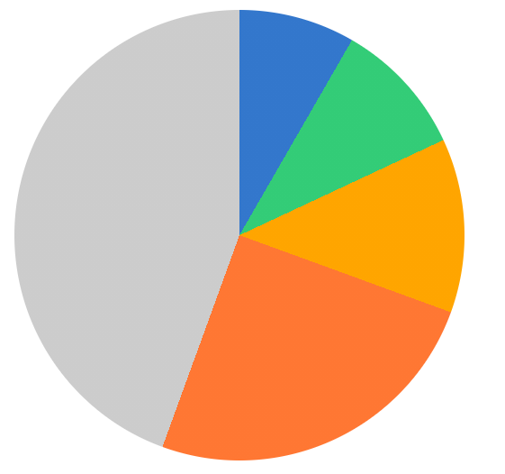
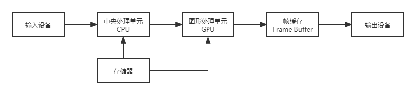
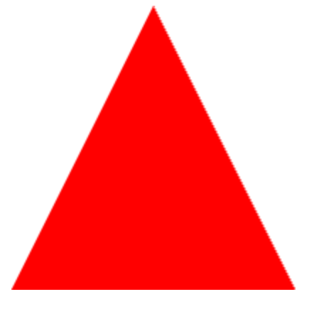
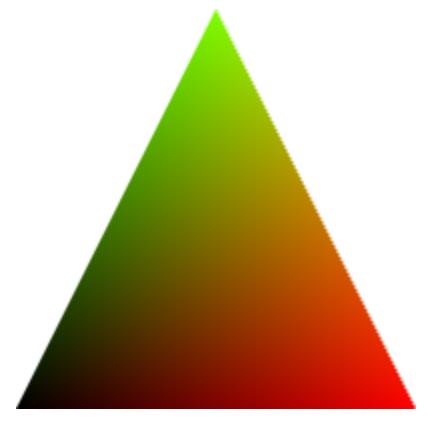

本文介绍了浏览器渲染引擎的4种绘制图形系统的基础知识。
概述
简单来说，可视化就是将数据信息组织起来，以图形的方式呈现出来。现代浏览器中负责绘制图形的部分是渲染引擎。其绘制方式大体可分为4种：
- 传统的HTML + CSS。
- 使用SVG。SVG与HTML+CSS的方式差别不大，但是SVG可以弥补HTML在矢量图形绘制方面的能力不足。
- 使用Canvas2D。Canvas2D是浏览器Canvas API的一种上下文，可以使用其绘制出基础的几何图形。
- 使用WebGL。WebGL也是浏览器Canvas API提供的一种上下文，是 OpenGL ES 在Web的实现，通过它，我们可以使用 GPU 进行各种2D、3D图形的渲染。
传统的HTML + CSS
在可视化的项目中，直接使用HTML与CSS的相对较少，但是可视化并不是不能使用HTML+CSS，相反，因为现代浏览器的HTML、CSS表现能力强大，一些常见的图表完全可以使用其实现，如柱状图、饼图等。
一些简单的可视化图表，用 CSS 来实现很有好处，既能简化开发，又不需要引入额外的库，可以节省资源，提高网页打开的速度。
实现柱状图
用 CSS 实现柱状图的方式有很多种，总结起来就是使用 线性渐变（linear-gradient）配合布局，实现出不同柱子的颜色。这边简单展示下对应代码：
1 | <div class="bargraph"> |
1 | .bargraph { |
展示效果如下：

实现饼图
CSS实现饼图的方法也很简单，使用圆锥渐变（conic-gradient）即可，代码如下：
1 | <div class="piegraph"></div> |
1 | .piegraph { |
展示效果如下：

用 HTML+CSS 实现可视化的缺点
- 因为HTML元素一般是矩形，虽然可以通过CSS进行绘制其他形状或不规则的图像，但是总体上还是非常麻烦的。
- 我们可以看出，通过CSS实现的图表中，大量的数据混杂在了CSS代码中，这导致我们很难看出某个数值与图形的关系，一旦图表或者数据发生改动时，需要开发人员进行重新计算或者对应，加大了维护成本。
- 另外，因为浏览器在渲染HTML+CSS时，需要进行HTML/CSS解析，生成DOM树等结构，然后进行绘制，当图形发生改变时，可能需要从头开始解析、渲染，这些性能开销是非常大的。
SVG
SVG(Scalable Vector Graphics，可缩放矢量图)，是一种基于XML语法的图像格式。在浏览器中，可以像操作普通HTML元素一样，利用DOM API操作SVG元素，并且CSS也可以在SVG上生效。
对比HTML+CSS，在绘制图表时，SVG与其差别不大，只不过是将HTML标签换成SVG标签，使用了一些SVG支持的特殊属性。比如上述的柱状图，使用SVG实现如下：
1 | <svg |
详细的SVG教程，可以查看MDN的官方文档。
SVG与HTML/CSS的对比
对比HTML+CSS，SVG在在绘制复杂图像，如不规则图像等具有比较明显的优点，除了上述代码中的rect外，SVG还支持诸如圆弧、椭圆、多边形、贝塞尔曲线等。但是，同HTML一样。在浏览器中，SVG一样需要经过解析、渲染树生成等步骤。而且，一个SVG元素一般只表示在展示复杂图形时，生成的SVG元素就会很多，这样一来，对渲染的性能就会有很大影响，因此，SVG只适用于元素较少的场景。
Canvas2D
在使用 Canvas 进行绘制时，大致需要以下操作：
- 在HTML内使用
Canvas元素创建一个空白的画布。 - 在JS代码中获取该画布，并获取其渲染上下文。
- 使用上下文，设置各种属性，并调用绘图指令进行输出即可。
这里，通过绘制一个正方形进行简单介绍。
绘制
Canvas元素
对于浏览器而言，Canvas也是一个HTML元素，直接使用 canvas 标签插入到HTML内即可
1 | <body> |
这里有一点需要注意的是，Canvas元素上的width与height属性与CSS样式里的属性不完全相同。CSS中的宽高影响的是Canvas在页面上的显示大小（下文称为样式宽高），Canvas元素上的width与height属性影响的是Canvas中的坐标系（下文称为画布宽高）。如果画布宽高，则默认为300*150。如果未设置样式宽高，则样式宽高默认等于画布宽高。
在上述这段代码中，这个Canvas的样式宽高就是 512px * 512px。
如果我们通过CSS设置了其宽高，比如我们设置为256px，那么画布宽高就是样式宽高的两倍了：
1 | canvas { |
因为画布宽高决定了可视区域的坐标范围，所以 Canvas 将画布宽高和样式宽高分开的做法，能更方便地适配不同的显示设备。
比如，我们要在画布宽高为 500*500 的 Canvas 画布上，绘制一个居中显示的 100*100 宽高的正方形。我们只要将它的坐标设置在 x = 200, y = 200 处即可。这样，不论这个 Canvas 以多大的尺寸显示在各种设备上，我们的代码都不需要修改。否则，如果 Canvas 的坐标范围（画布宽高）跟着样式宽高变化，那么当屏幕尺寸改变的时候，我们就要重新计算需要绘制的图形的所有坐标。
这里顺便说下，Canvas2D的坐标系是左手系，即x轴为水平向右，y轴垂直向下，与我们一般的xy坐标系的y坐标是相反的。另外，其坐标范围是 (0, 0) 到 (canvas.width, canvas.height) 这样的一个平面区域。
获取上下文
JS中获取Canvas2D上下文，需要先获取到这个Canvas元素，然后通过其 getContext 方法获取2d上下文：
1 | const canvas = document.querySelector('canvas') |
绘制
在拿到的 context 对象上会有许多API，大致可以分成两类：一类是设置状态的 API，可以设置或改变当前的绘图状态，比如，改变要绘制图形的颜色、线宽、坐标变换等等；另一类是绘制指令 API，用来绘制不同形状的几何图形。
我们将通过上面所获取到的context在画布中心绘制一个红色正方形。
因为将正方形填充成红色，这一步通过调用 context.fillStyle 指令就可以完成。
然后，我们要调用一个 beginPath 的指令，告诉 Canvas 我们现在绘制的路径。
接着，才是调用 rect 指令完成绘图。因为 rect 指令前两个参数x y表示的是矩形的左上角坐标，所以为了在画布中心绘制，还需要将坐标进行调整。我们可以通过改变x y的值进行调整，也可以通过translate指令对画布进行整体平移，在平移后记得进行恢复。
Canvas 上下文还提供了 save 和 restore 方法，可以暂存和恢复画布某个时刻的状态。其中，save 指令不仅可以保存当前的 translate 状态，还可以保存其他的信息，比如，fillStyle 等颜色信息。 而 restore 指令则可以将状态指令恢复成 save 指令前的设置。
最后，我们还要调用 fill 指令，将绘制的内容真正输出到画布中。这样我们就完整了绘制，绘制的效果和代码如下：
1 | const rectWidth = 100 |
详细的Canvas教程，可以查看MDN的官方文档。
Canvas2D与SVG的对比
在实现效果上，SVG与Canvas差别不大，在使用上的不同点可以分成两方面，一是写法上的不同，二是用户交互实现上的不同。
写法上的不同
前文有说到，SVG是一种声明式绘图系统，而Canvas是一种指令式绘图系统。具体而言，SVG 首先通过创建标签来表示图形元素，circle 表示圆，g 表示分组，text 表示文字等等。接着，SVG 通过元素的 setAttribute 给图形元素赋属性值，这个和操作 HTML 元素是一样的。而 Canvas 先是通过上下文执行绘图指令来绘制图形，画圆是调用 context.arc 指令，然后再调用 context.fill 绘制，画文字是调用 context.fillText 指令。另外，Canvas 还通过上下文设置状态属性，context.fillStyle 设置填充颜色，conext.font 设置元素的字体。我们设置的这些状态，在绘图指令执行时才会生效。
用户交互实现上的不同
因为SVG中，一个图形对应一个svg元素，同时SVG也支持CSS样式，所以当我们需要在SVG上增加一些鼠标事件的时候是很方便的。比如，我们需要在鼠标hover某个元素的时候，将这个元素的背景色进行高亮，并且获取这个元素的一些信息，那么我们就可以用如下代码实现：
1 | <svg xmlns="http://www.w3.org/2000/svg" version="1.1"> |
1 | const circle = document.getElementById('circle') |
1 | #circle:hover { |
可以看到，我们实现的方式跟普通的HTML/CSS的方式完全一样的。
反观Canvas，因为Canvas在HTML是一个独立的canvas元素，所有绘制内容都是在内部使用指令完成的，对于浏览器而言，这些绘制内容都是一个个的像素点，当我们要实现类似于hover或者点击事件的时候，我们就得自己去判断这个鼠标位置跟绘制图形的位置关系。对于如圆形这种简单图形而言，这个判断还算简单，我们只要判断鼠标与每个圆的圆心距离关系即可。但是对于一些不规则图形，这个判断就会变得比较复杂，在后续的文章中，我们将单独介绍。
WebGL
在了解WebGL之前，需要先了解下一些图形系统绘制的原理。
图形系统绘制原理
一个通用计算机图形系统主要包括 6 个部分，分别是输入设备、中央处理单元、图形处理单元、存储器、帧缓存和输出设备。绘制过程示意如下图：

另外还有几个概念需要先清楚下：
- 光栅（Raster）：几乎所有的现代图形系统都是基于光栅来绘制图形的，光栅就是指构成图像的像素阵列。
- 像素（Pixel）：一个像素对应图像上的一个点，它通常保存图像上的某个具体位置的颜色等信息。
- 帧缓存（Frame Buffer）：在绘图过程中，像素信息被存放于帧缓存中，帧缓存是一块内存地址。
- CPU（Central Processing Unit）：中央处理单元，负责逻辑计算。
- GPU（Graphics Processing Unit）：图形处理单元，负责图形计算。
清楚了这几个概念后，可以用文字描述下绘制过程：
首先，输入的数据经过 CPU 处理，成为具有特定结构的几何信息。然后，这些信息会被送到 GPU 中进行处理。在 GPU 中要经过两个步骤生成光栅信息。这些光栅信息会输出到帧缓存中，最后渲染到屏幕上。
这个绘制过程是现代计算机中任意一种图形系统处理图形的通用过程。它主要做了两件事，一是对给定的数据结合绘图的场景要素（例如相机、光源、遮挡物体等等）进行计算，最终将图形变为屏幕空间的 2D 坐标。二是为屏幕空间的每个像素点进行着色，把最终完成的图形输出到显示设备上。这整个过程是一步一步进行的，前一步的输出就是后一步的输入，所以我们也把这个过程叫做渲染管线（RenderPipelines）。
同时，我们需要知道GPU与CPU的区别。CPU与GPU都是处理单元，但是其结构不同。对于CPU而言，数据是有序进入CPU进行处理，并被依次输出；而GPU则可以同时处理大批量的数据。
好了，了解完这些原理，接下来我们回到WebGL上。
WebGL如何绘制一个三角形
在使用 WebGL 进行绘制时，大致需要以下步骤：
- 创建 WebGL 上下文
- 创建 WebGL 程序（WebGL Program）
- 将数据存入缓冲区
- 将缓冲区数据读取到 GPU
- GPU 执行 WebGL 程序，输出结果
这里，通过绘制一个三角形进行简单介绍。
创建 WebGL 上下文
建 WebGL 上下文这一步和 Canvas2D 的使用几乎一样，我们只要调用 canvas 元素的 getContext 即可，区别是将参数从2d换成webgl。
1 | const canvas = document.querySelector('canvas') |
不过，有了 WebGL 上下文对象之后，我们并不能像使用 Canvas2D 的上下文那样，调用几个绘图指令就把图形画出来，还需要做很多工作。
创建 WebGL 程序
接下来，我们要创建一个 WebGL 程序。这里的 WebGL 程序是一个 WebGLProgram 对象，它是给 GPU 最终运行着色器的程序，而不是我们正在写的三角形的 JavaScript 程序。
首先，要创建这个 WebGL 程序，我们需要编写两个着色器（Shader）。着色器是用 GLSL 这种编程语言（类似于C语言）编写的代码片段，在这里，我们暂时只需要理解绘制三角形的这两个着色器的作用就可以了。
1 | const vertex = ` |
为什么是两个着色器？这就要求我们先理解另外两个概念：顶点和图元。在绘制的时候，WebGL是以顶点和图元来描述图形的几何信息的。顶点就是几何图形的顶点，比如，三角形有三个顶点，矩形有四个顶点。图元是WebGL能够处理的最小图形单元，由WebGL的绘图模式决定，有点、线、三角形三种。
因此，在绘图过程中，顶点和图元是必不可少的，也因此，在WebGL的绘制过程中，一般需要定义两个着色器，一个叫顶点着色器（Vertex Shader）负责处理图形的顶点信息，另一个叫片元着色器（Fragment Shader）负责处理图形的像素信息。
具体点来说，我们可以把顶点着色器理解为处理顶点的 GPU 程序代码。它可以改变顶点的信息（如顶点的坐标、法线方向、材质等等），从而改变我们绘制出来的图形的形状或者大小等等。
顶点处理完成之后，WebGL 就会根据顶点和绘图模式指定的图元，计算出需要着色的像素点，然后对它们执行片元着色器程序。简单来说，就是对指定图元中的像素点着色。
WebGL 从顶点着色器和图元提取像素点给片元着色器执行代码的过程，就是我们前面说的生成光栅信息的过程，我们也叫它光栅化过程。所以，片元着色器的作用，就是处理光栅化后的像素信息。
举个例子,我们可以将图元设为线段，那么片元着色器就会处理顶点之间的线段上的像素点信息，这样画出来的图形就是空心的。而如果我们把图元设为三角形，那么片元着色器就会处理三角形内部的所有像素点，这样画出来的图形就是实心的。
这边有两点需要注意的。一是图元是 WebGL 可以直接处理的图形单元，所以其他非图元的图形最终必须要转换为图元才可以被 WebGL 处理。举个例子，如果我们要绘制实心的四边形，我们就需要将四边形拆分成两个三角形，再交给 WebGL 分别绘制出来。二是无论有多少个像素点，片元着色器都可以同时处理，这也是片元着色器一大特点。
介绍完两种着色器，我们继续回到代码。
我们上面定义了顶点着色器和片元着色器两个代码段，接着，我们需要将这两个代码段创建成shader对象，代码如下：
1 | const vertexShader = gl.createShader(gl.VERTEX_SHADER) |
接着，我们创建一个 WebGLProgram 对象，并将这两个 shader 关联到这个 WebGL 程序上。WebGLProgram 对象的创建过程主要是添加 vertexShader 和 fragmentShader，然后将这个 WebGLProgram 对象链接到 WebGL 上下文对象上。代码如下：
1 | const program = gl.createProgram() |
最后，我们要通过 useProgram 选择启用这个 WebGLProgram 对象。这样，当我们绘制图形时，GPU 就会执行我们通过 WebGLProgram 设定的 两个 shader 程序了。
1 | gl.useProgram(program) |
到此为止，我们已经完成了 WebGL 程序的创建。
将数据存入缓冲区
与Canvas的坐标系不同，WebGL的坐标系是右手系，并且其坐标范围恒为x∈[-1, 1], y∈[-1,1]这样一个区域。
这里我们绘制一个三个顶点分别为(-1, -1)、(0, 1)、(1, -1)的三角形。
首先，我们要定义这个三角形的三个顶点。WebGL 使用的数据需要用类型数组定义，默认格式是 Float32Array 这种类型化数组，其使用起来跟普通的Array差不多，具体可以看MDN的官方文档。
1 | const points = new Float32Array([ |
接着，我们要将定义好的数据写入 WebGL 的缓冲区。这个过程我们可以简单总结为三步，分别是:
- 创建一个缓存对象
- 将它绑定为当前操作对象
- 再把当前的数据写入缓存对象。
这三个步骤主要是利用 createBuffer、bindBuffer、bufferData 方法来实现的，代码如下：
1 | const bufferId = gl.createBuffer() |
将缓冲区数据读取到 GPU
经过以上步骤，我们已经把数据写到缓冲区了，接下来我们要将数据绑定到上面定义的顶点着色器的position变量，使得shader能够读取到我们定义的数据。代码如下：
1 | const vPosition = gl.getAttribLocation(program, 'position') // 获取顶点着色器中的position变量的地址 |
执行着色器程序完成绘制
现在，我们已经有了 WebGL 程序，也将数据写到缓冲区，并且着色器也能拿到缓冲区里的数据了。那么，现在我们就可以进行绘制了这里我们选择 gl.TRIANGLES 表示以三角形为图元绘制，再传入绘制的顶点偏移量和顶点数量，WebGL 就会将对应的 buffer 数组传给顶点着色器，并且开始绘制。代码如下：
1 | gl.drawArrays(gl.TRIANGLES, 0, points.length / 2) |
最终绘制结果如下：

片元着色器
回顾下上面的片元着色器代码：
1 | precision mediump float; |
第1行中，我们全局声明了片元着色器中浮点数类型的精度。
第4行中，gl_FragColor 是 WebGL 片元着色器的一个内置变量，表示当前像素点颜色，它是一个用 RGBA 色值表示的四维向量数据。上面的代码中，我们赋值为vec4(1.0, 0.0, 0.0, 1.0)，所以最后绘制出来的三角形是红色的，如果我们赋值为vec4(0.0, 0.0, 1.0, 1.0)，那么最终绘制出来的就是一个蓝色三角形。
可以看到，我们只改变了一个颜色，最终所有像素点的颜色都跟着变成了蓝色，这也说明了GPU是同时对所有像素点都执行了这段着色器代码的。
顶点着色器
看完片元着色器，我们在接着看下顶点着色器：
1 | attribute vec2 position; |
第1行中，我们使用attribute声明了一个vec2类型的二维向量position。
attribute是一种存储限定符(类似于js中的var/let/const)，此外，还存在 uniform, varying 这两种存储限定符，这边简要介绍下：
attribute: 只能出现在顶点着色器中，被用来从外部（如JS程序）向 WebGL 内部中传递顶点信息（比如坐标、颜色）uniform: 可以出现在顶点着色器和片元着色器中，可以理解为只读的全局变量，也是用于外部程序向 WebGL 内部传递信息varying: 可以出现在顶点着色器和片元着色器中，可以理解为可变的全局变量，是顶点着色器向片元着色器传递信息的渠道
第4行中，gl_Position 是 WebGL 顶点着色器的一个内置变量，表示当前顶点坐标的位置，是一个四维向量数据，注意，WebGL 中的坐标虽然是三维坐标，但是在表示坐标时，WebGL 使用的是齐次坐标进行表示，针对(x, y, z, w)这样一个齐次坐标，等同于(x/w, y/w, z/w)这样一个三维坐标。
这边介绍下varying的用法。
我们修改上面的顶点着色器代码为下面这样：
1 | attribute vec2 position; |
这边我们声明了一个color的变量，并且通过顶点坐标映射了一个颜色
（vec3(0.5 + position * 0.5, 0.0)），这样子，顶点(-1, -1)对应的颜色就是(0, 0, 0)，也就是黑色，顶点(0, 1)对应的颜色就是(0.5, 1, 0)、顶点(1, -1)对应的颜色就是(1, 0, 0)。
然后，我们也对片元着色器进行修改：
1 | precision mediump float; |
同样的，我们也在片元着色器内声明了color变量，并且将gl_FragColor使用color进行赋值。这样，我们就得到了一个渐变色的三角形：

可以发现，三个顶点中间像素点的颜色是均匀过渡的。这是因为 WebGL 在执行片元着色器程序的时候，顶点着色器传给片元着色器的变量，会根据片元着色器的像素坐标对变量进行线性插值。
详细的WebGL教程，可以查看MDN的官方文档。
参考
极客时间 - 跟月影学可视化
Github - lesnitsky/webgl-month
入门 WebGL，看这一篇就够了